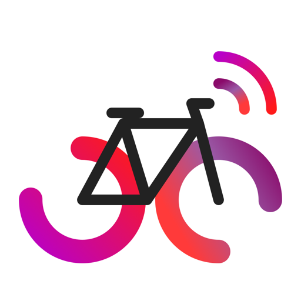

<!doctype html>
<html lang="fr">
<head>
  <meta charset="utf-8">
  <meta name="viewport" content="width=device-width, initial-scale=1, viewport-fit=cover">
  <meta name="theme-color" content="#111114">
  <meta name="apple-mobile-web-app-capable" content="yes">
  <meta name="mobile-web-app-capable" content="yes">
  <meta name="apple-mobile-web-app-status-bar-style" content="black-translucent">
  <meta name="apple-mobile-web-app-title" content="Radios Vélo">
  <title>Radios Vélo</title>
  <link rel="manifest" href="manifest.webmanifest">
  <link rel="icon" href="icons/icon-192.png" type="image/png">
  <link rel="apple-touch-icon" href="icons/apple-touch-icon.png">
  <link rel="stylesheet" href="style.css">
</head>
<body>
  <div class="scroller">
    <main class="grid" id="grid"></main>

    <footer class="tools">
      <button class="tool" id="edit">Réorganiser les radios</button>
      <div class="cover-tools" id="cover-tools" hidden>
        
        <label class="tool cover-pick">Image de couverture
          <input type="file" id="cover-input" accept="image/*" hidden>
        </label>
        <button class="tool" id="cover-reset" hidden>Retirer l'image</button>
      </div>
      <button class="tool" id="reset" hidden>Ordre par défaut</button>
    </footer>
  </div>

  <audio id="audio" preload="none"></audio>
  <script src="app.js"></script>
</body>
</html>
